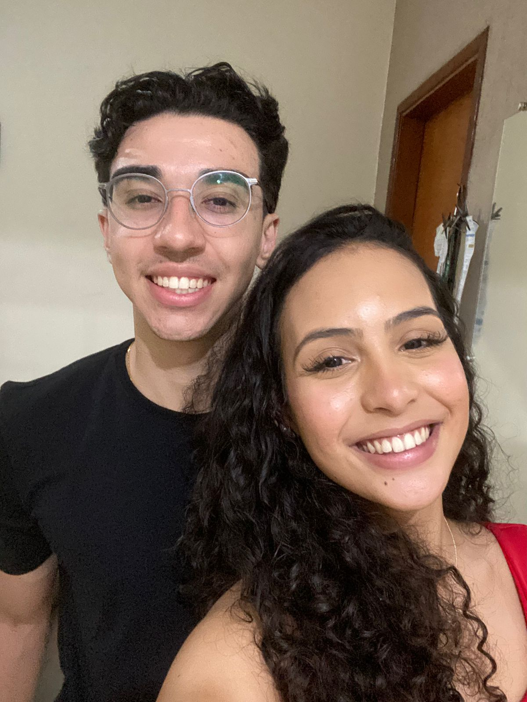

Minha cartinha virtual
Não sei muito bem por onde começar… afinal, escrever para a pessoa que você mais ama no mundo não é tão simples quanto parece. Engraçado, né? Logo eu, que sempre tenho algo para falar, agora fico sem saber que palavras usar.
Amor, esses três meses foram os mais intensos da minha vida. Foram meses em que vivi coisas que nunca tinha vivido antes. Posso dizer, sem exagero nenhum (ou talvez só um pouquinho), que foram os três melhores meses da minha vida.
Hoje eu sou a pessoa mais feliz do mundo. Feliz mesmo. Mesmo você ainda duvidando do meu amor às vezes… mas tudo bem, eu sei que no fundo você gosta de fingir que não acredita só pra me fazer provar mais uma vez. Estratégia interessante, inclusive. 😅
Obrigado por tudo, amor. Por cada momento, cada conversa, cada risada e até pelas suas mensagens enigmáticas que às vezes parecem um desafio de interpretação que nem sempre entendo o que você quer kkkkkkk.
Eu sei que talvez eu não seja a melhor pessoa para demonstrar sentimentos escrevendo, ou até demonstrando do jeito que você merece. Às vezes posso parecer parado demais… mas uma coisa você nunca precisa duvidar: do quanto eu te amo.
Hoje, amanhã e todos os dias que vierem pela frente… eu sempre vou te amar.
Mesmo quando você estiver implicando comigo, duvidando de mim ou mandando aquelas mensagens misteriosas que me fazem pensar por uns 10 minutos antes de responder. Mas tudo bem… faz parte de amar você.
E, sinceramente? Eu não trocaria isso por nada nesse mundo.
Obrigado por nossos 3 meses❤❤
Nosso Tempo Juntos
Cada segundo conta ao seu lado
O Pedido
O momento perfeito em um lugar inesquecível.
Parque José Affonso Junqueira - Poços de Caldas, MG
Nossos Momentos
Retratos de uma vida a dois.
